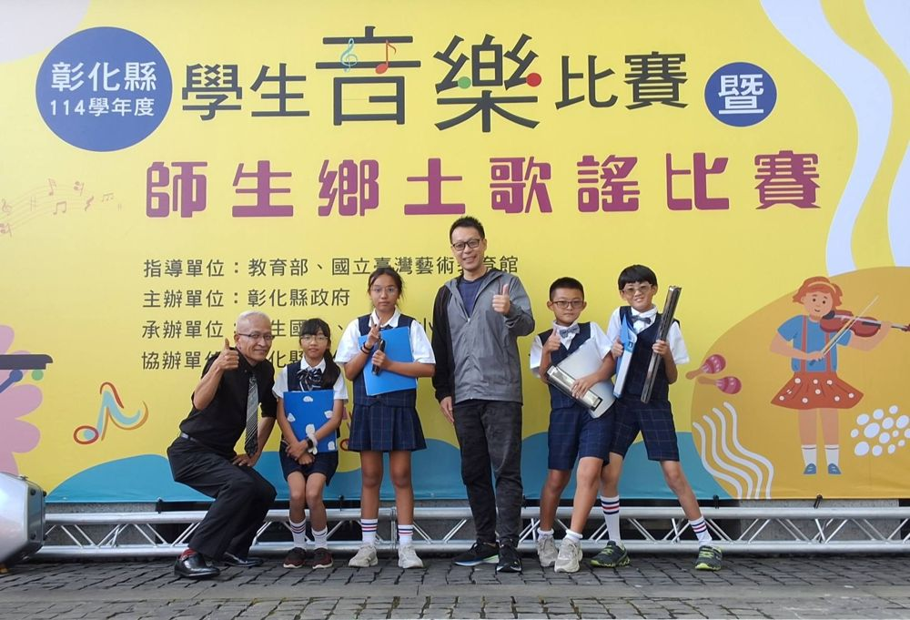
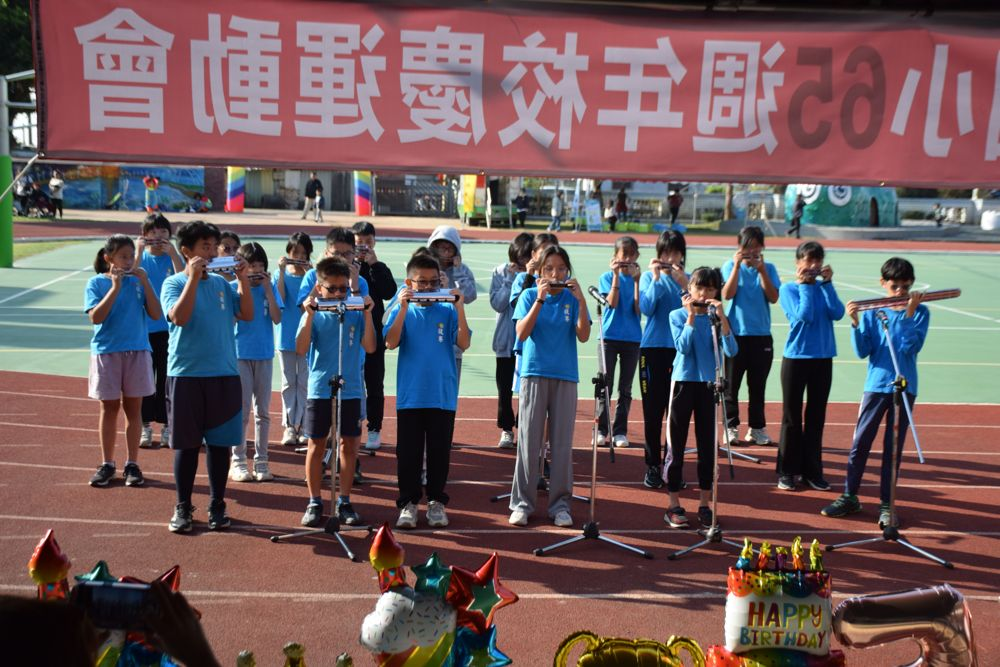
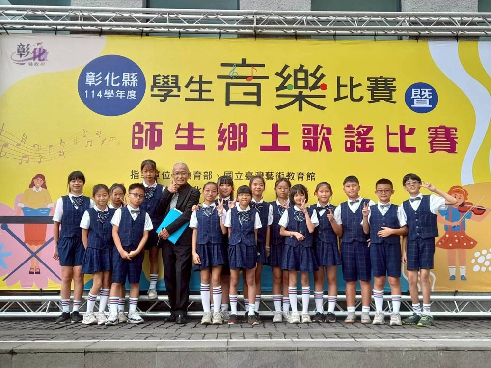
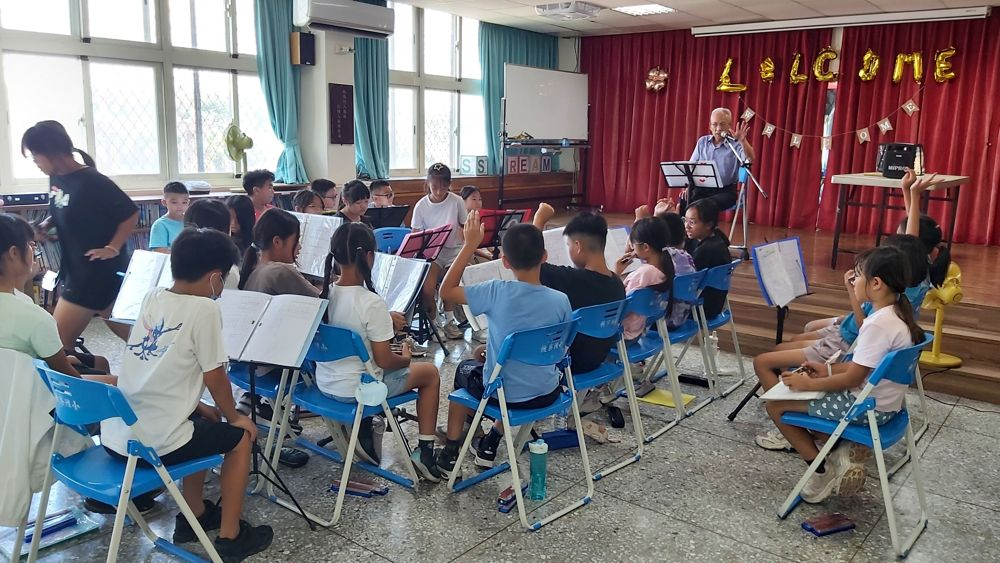

Harmonica · 口琴
Harmonica Club口琴社團
From quiet practice in the hall to the bright stage of the county student music contest, our harmonica players learn that a small instrument can fill a whole room. The club performs at the school anniversary sports day and competes as both an ensemble and a quartet.
從練習室裡反覆吹奏，到彰化縣學生音樂比賽的舞台，口琴社的孩子學會：小小的樂器，也能填滿整個禮堂。社團在校慶運動會登台演出，並以合奏與四重奏的形式參賽。



